flowchart LR
A["Car & Track (x) Selected"] --> B["Driver (y) Start"]
B --> C["Acclimation Laps/Time (z)"]
C --> D["Hot Laps/Time (z)"]
D --> E[Time Recorded]
E --> F{All drivers done?}
F -->|No, next driver| B
F -->|Yes| A
| Make | Model | ABS | Shift Style | Clutch Use | sp_v_MX-5 |
|---|---|---|---|---|---|
| BMW | M2 CS Racing (F87) – 2020 | YES | Paddle | Never | -3.5* |
| BMW | M2 Racing (G87) | YES | Paddle | Never | -4.5* |
| Mazda | Global MX-5 Cup | YES | Paddle | Never | 0.0 |
| Mazda | [Legacy] MX-5 Cup & Roadster – 2010 | YES | H-patter | Always | +1.5* |
| Toyota | GR86 (cup) | YES | Paddle | Start | -0.5 |
| Porsche | 718 Cayman GT4 Clubsport MR | YES | Paddle | Never | -7.0* |
| Porsche | 911 RSR | NO | Paddle | Never | -13.5* |
sp_v_MX-5 = estimated delta in seconds around Lime Rock Park – Grand Prix vs. the Global Mazda MX-5 Cup (negative = faster, positive = slower). Values without an asterisk (Mazda Global MX-5 Cup, Toyota GR86) are based on directly sourced Track Titan "fast driver" benchmark laps. Values marked with * have no direct Track Titan benchmark for this exact car/track and are estimated from comparable class pace — treat as rough guides only.
| Track Name | Configuration | Size | BG Time (MX-5) | Track Image |
|---|---|---|---|---|
| Lime Rock Park | Grand Prix | 1.53 | 1:01.575 | 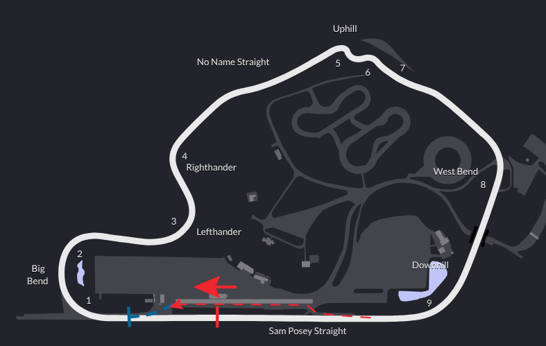 |
| Red Bull Ring | Grand Prix | 2.68 | 1:51.067 | 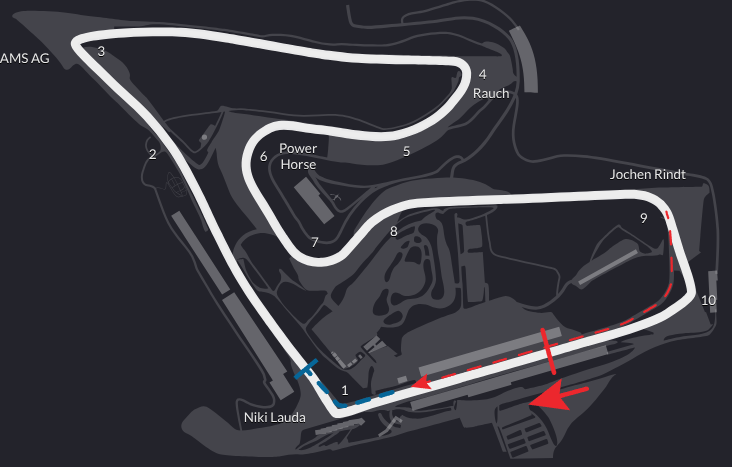 |
| Red Bull Ring | National | 1.45 | 0:59.739 | 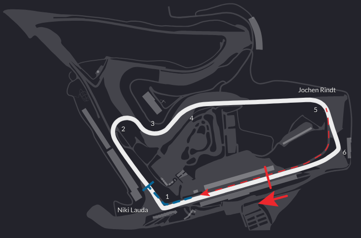 |
| Red Bull Ring | North | 1.14 | 0:56.511 | 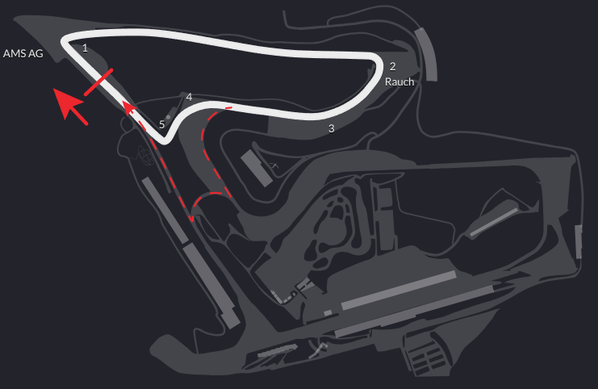 |
| Road Atlanta | Full Course | 2.54 | 1:37.847 | 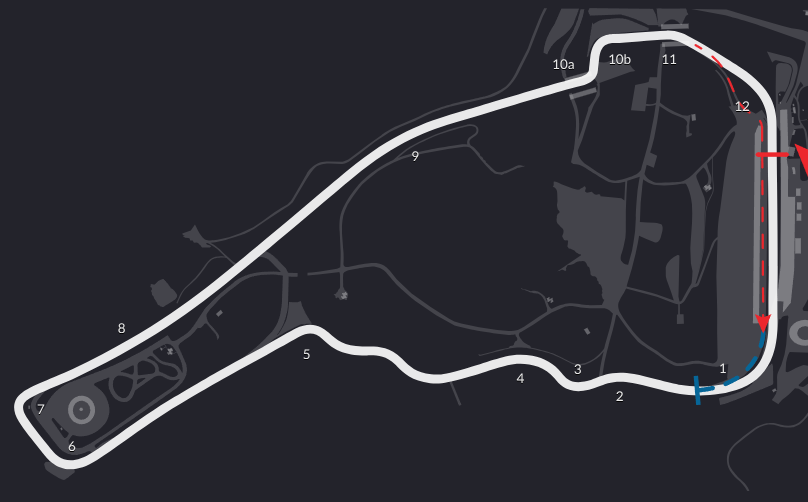 |
| Road Atlanta | Club | 1.81 | ~1:08.4* | 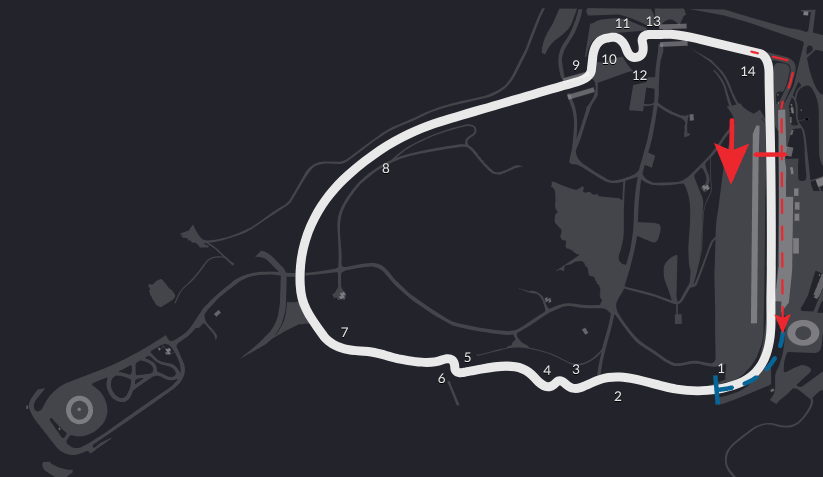 |
| Road Atlanta | Short | 1.76 | 1:06.421 | 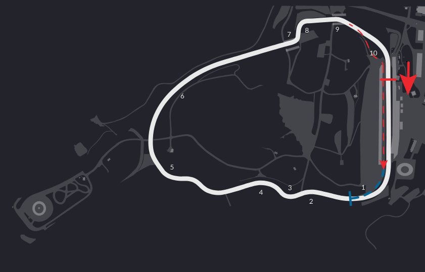 |
| Laguna Seca | 2.23 | 1:39.629 | 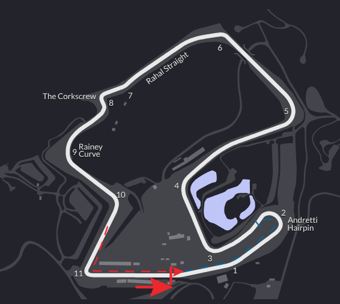 | |
| Suzuka | Grand Prix | 3.6 | 2:27.127 | 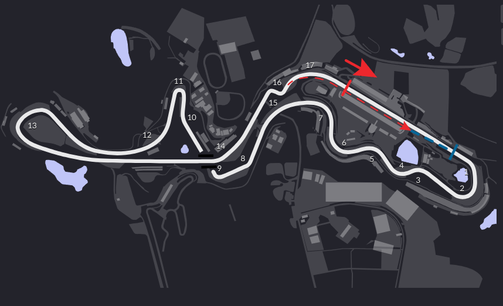 |
| Suzuka | East | 1.39 | 0:58.673 | 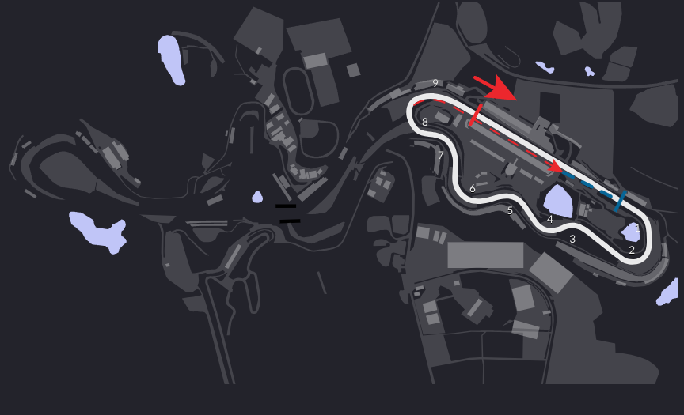 |
| Suzuka | West | 2.15 | 1:31.734 | 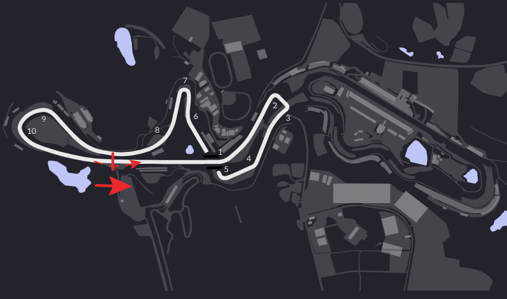 |
| Tsukuba | 2000 Full | 1.27 | 1:03.863 | 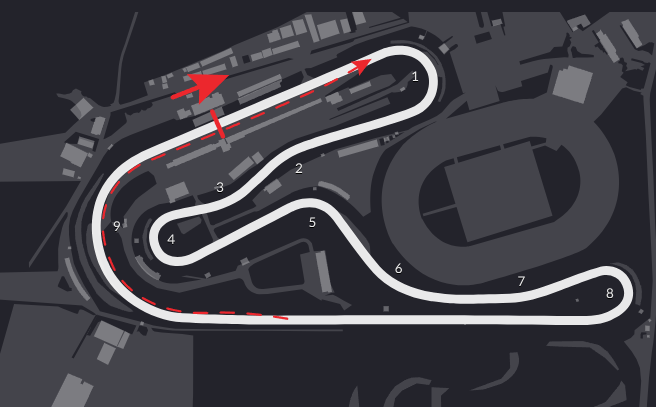 |
| Virginia International | Full Course | 3.27 | 2:11.200 | 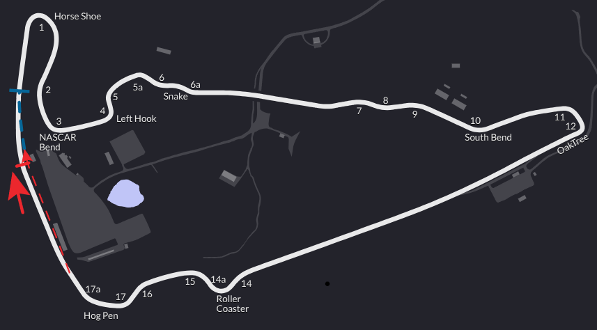 |
| Phoenix Raceway | Road Course | 1.51 | 1:08.354 | 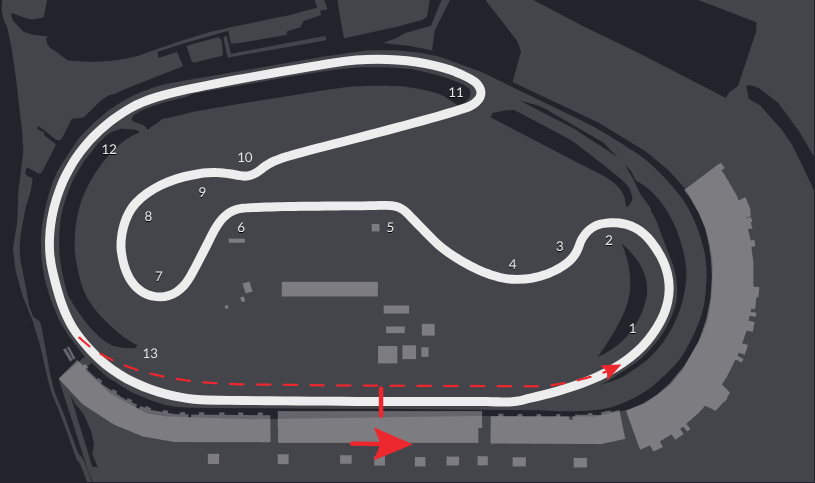 |
| Daytona | Road Course | 3.56 | ~2:22.0* | 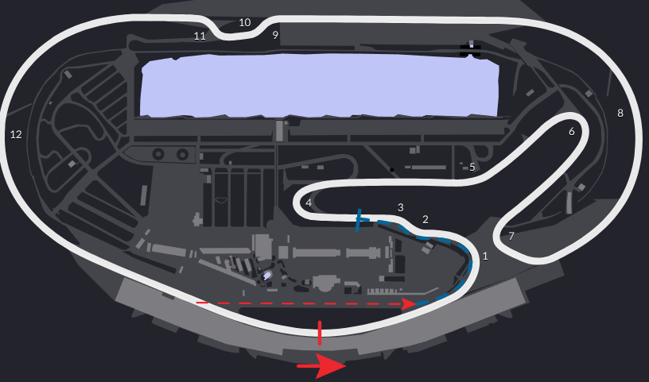 |
| Mount Pnorama Circuit | 3.86 | 2:35.818 | 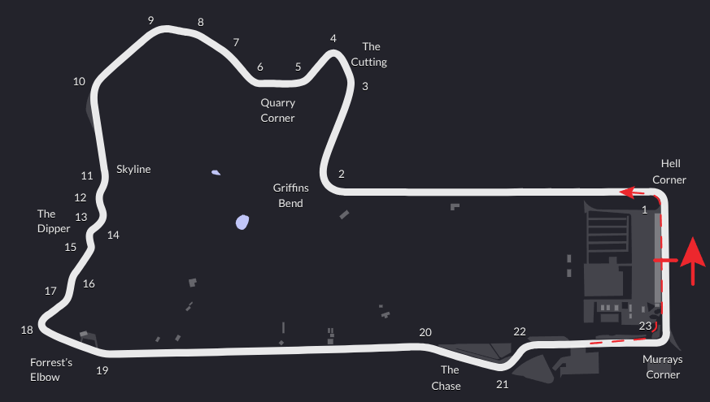 |